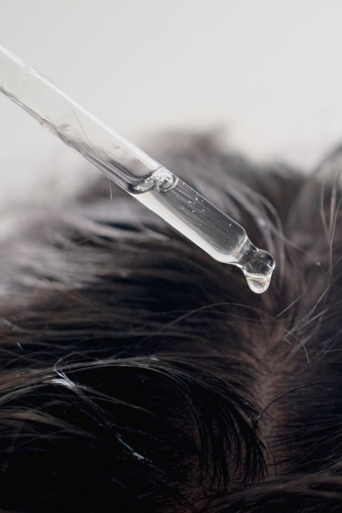
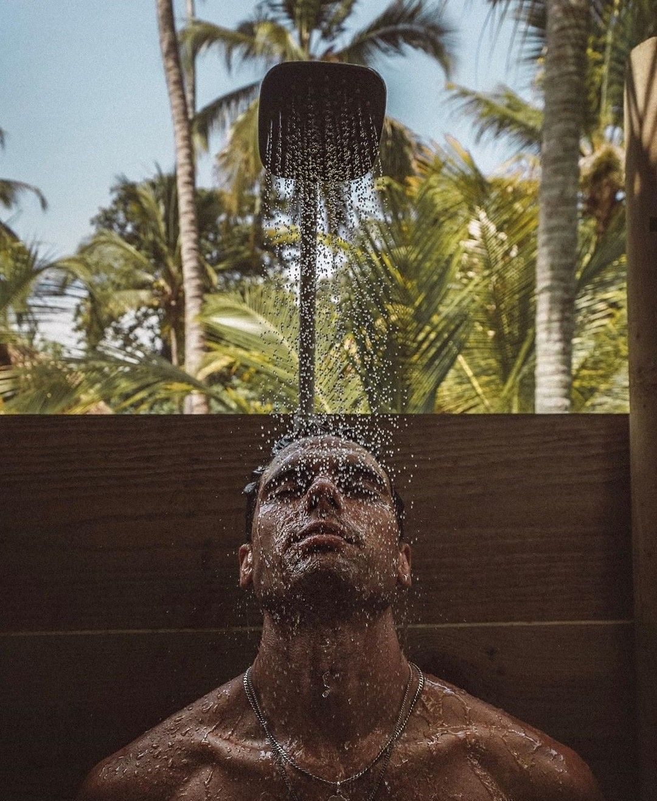

Miért más a hajápolás nyáron?
A nyári hónapokban a haj és a fejbőr egészen más terhelésnek van kitéve, mint az év többi részében. A magas hőmérséklet felgyorsítja a faggyútermelést – a haj gyorsabban zsírosodik, a fejbőr hamarabb izzad. Az erős napsugárzás kiszárítja és fakítja a hajat, a strandolás után a sós vagy klóros víz pedig tovább roncsolja a hajszálakat.
Mindez azt jelenti, hogy azok az ápolási szokások, amelyek télen vagy tavasszal jól működtek, nyáron nem feltétlenül elegendők. Érdemes tudatosan átgondolni, mit és hogyan csinálsz a hajaddal a meleg hónapokban.

Nyári hajápolási tippek férfiaknak
Néhány egyszerű szokás bevezetésével sokat lehet tenni azért, hogy a haj egész nyáron egészséges és kezelhető maradjon.
- Könnyű, kímélő sampon – nyáron érdemes kerülni az erős tisztítószereket; egy enyhe, frissítő sampon jobban megőrzi a fejbőr természetes egyensúlyát, miközben eltávolítja az izzadságot és a szennyeződéseket
- UV-védelem – ahogy az arcbőrt védjük a naptól, ugyanúgy a hajat is érdemes. UV-védő hajtermék vagy sapka viseletével csökkenthetők a napsugárzás okozta károk – a kiszáradás, a fakítás és a töredezettség
- Strand után mindig öblítés – a sós tengervíz és a klóros uszodavíz is kiszárítja a hajat; strand vagy uszoda után érdemes azonnal leöblíteni a hajat tiszta vízzel, és lehetőség szerint hajat is mosni
- Hidratáló balzsam vagy hajolaj – ha a haj száraznak, töredezettnek érződik, egy könnyű hidratáló balzsam vagy néhány csepp hajolaj sokat segíthet; kerüld a nehéz, zsíros termékeket, amelyek melegben kényelmetlenek
- Ritkább hajmosás – de alaposabb – a haj sűrűbben zsírosodik nyáron, de a túl gyakori mosás tovább kiszárítja; ha lehet, tartsd meg a heti 2–3 alkalmas rutint, de ügyelj az alapos öblítésre

Nyárbarát férfi frizurák
A frizura megválasztása nyáron nem csak stíluskérdés – a rövidebb, levegősebb hajvágások kényelmesebbek a hőségben, könnyebben kezelhetők és gyorsabban száradnak strand után. Az alábbi stílusok a legpraktikusabbak a nyári hónapokban.
Rövid fade hajvágás
Az oldalak rövidek, a fejbőr lélegzik – melegben ez különösen előny. A fade technika modern és rendezett megjelenést ad minimális napi formázással. Nyáron ideális választás.
Buzz cut (gépi hajvágás)
A legpraktikusabb nyári megoldás. Egységes rövid hossz, nulla formázás, könnyű karbantartás. Strand után 10 másodperc alatt szárad, és mindig rendezettnek mutat.
Texturált rövid haj
Ha egy kis karakter is kell a rövid mellett – a tépett, texturált stílus légies hatást kelt, és minimális hajformázóval is formában tartható. Melegben sem nehéz viselni.
Crew cut
Klasszikus, időtálló frizura – rövid oldalak, enyhén hosszabb tető. Formázás nélkül is rendezett, és nyáron épp annyira praktikus, mint bármely más évszakban.
Nyáron sűrűbben kell barberhez menni
Nyáron a haj gyorsabban nő – a meleg és a fokozott anyagcsere felgyorsítja a növekedést. Ez azt jelenti, hogy a fade átmenetek hamarabb elmosódnak, a kontúrok hamarabb elvesznek, és a frizura általában két-három héttel korábban "ül le", mint télen.
Ha skin fade-et vagy high fade-et hordasz, nyáron érdemes 2–3 hetente frissítőre menni. Mid fade és rövidebb stílusok esetén ez 3–4 hétre tolható ki. Az is megoldás, hogy egy egyszerűbb, lassabban kinövő stílust választasz a nyári hónapokra – és ősszel visszatérsz a megszokott frizurádhoz.
- Skin fade, high fade: 2–3 hetente érdemes frissíteni nyáron
- Mid fade, rövid stílusok: 3–4 hét
- Buzz cut, crew cut: a legtartósabb nyári megoldások, 4–5 hetente is elegendő
- Online időpontfoglalás a Bosphorus barber shopban – Budapest 7. kerület
Frissítsd a frizurádat a nyárra
Rövidebb, levegősebb, könnyen kezelhető – foglalj időpontot a Bosphorus barber shopba, és a borbély segít megtalálni azt a nyárbarát stílust, amelyik a hajtípusodhoz és az életstílusodhoz a legjobban illik.